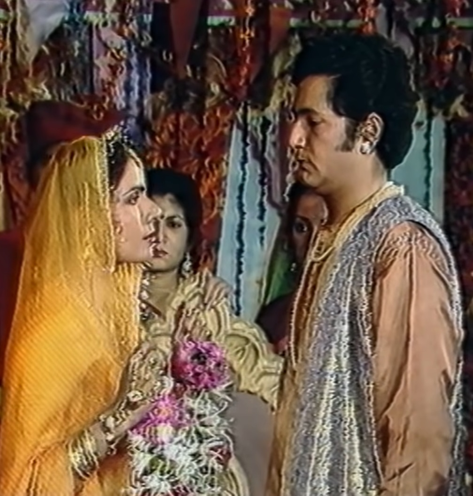

| King Vikram comes again to capture Betal and takes him away. So Betal listens to a story from Vikram again. King of Ujjaini State Veerdev had a daughter named Anangrati. The princess used to go out for a walk in the kingdom and She used to return after many days. Princess Anangrati in a dress in the kingdom She meets a merchant from India who presents her a saree, which the princess is pleased with. She becomes happy and goes with him to see his house and saree. That The princess is very happy to see the merchant's art of making clothes and She tells him that she also wants to learn this work and soon she will come to him. Will have to learn the work. As the princess moves ahead, she stops in a forest on the way. When she met a boy who knew how to talk to birds, the princess also knew how to talk to them. She says that she also wants to learn the language of birds, so the boy tells her Says that he will definitely teach them but it will take a lot of time and he If he cannot leave the forest then Princess Anangrati tells him that it is time After coming out, he will definitely come to learn this language. The princess with her servants and friends Moves forward with. If the princess gets high fever then the princess The servants take him to a doctor. The doctor gives them medicine. When the princess gets well after some time of taking the medicine, she goes to the doctor's house. She also sees other people who were being treated by the doctor. Rajkumari Vaidya's Seeing the feeling of kindness, she tells them that she also wants to do all this for others. She also wants to get the privilege of serving, so she tells the doctor that she She will definitely come and serve the sick people along with the doctor. princess from there She starts walking and when the princess was walking in the forest, she met a hunter. Gets caught in the trap. A brave man comes there and traps the princess. When he sees them trapped, he frees them from the trap and takes them down safely. Takes off. The princess is very happy to meet that brave man and She thanks him for saving her life. The princess returns to her palace Is. King Veerdev and his mother Padmavati are happy with the arrival of the princess and He is told that relations of many princes of the neighborhood have come for him. Princess Anangrati tells the king that she wants to marry a king or a prince. She would prefer to marry a common man from her state. The king listens to his daughter and arranges her swayamvara. princess in the kingdom The news of Swayamvar is announced. Hearing about the princess's swayamvara Those four traders, the fowler, the doctor and also the boy who protects the queen. Goes to participate in Swayamvar. Now everyone comes there on the day of Swayamvar. The princess had to choose one among them all. Now from Betal Raja Vikram Asks whom the princess will choose as her groom, then tell King Vikram Betal. It tells that the princess will choose for herself that brave man who is brave and Can protect their kingdom and it. The princess lacks wealth. Therefore, she would not marry that businessman nor would she marry the doctor. Will do it because he likes that work but to do that work he has to Vaidya will not have to marry and Baheliya has a talent which only He has a virtue but he will not be able to protect the kingdom, so the princess Lia will choose that brave man as her husband. After hearing the reply of King Vikram, Betal again It flies away and hangs back on the tree. |
 |